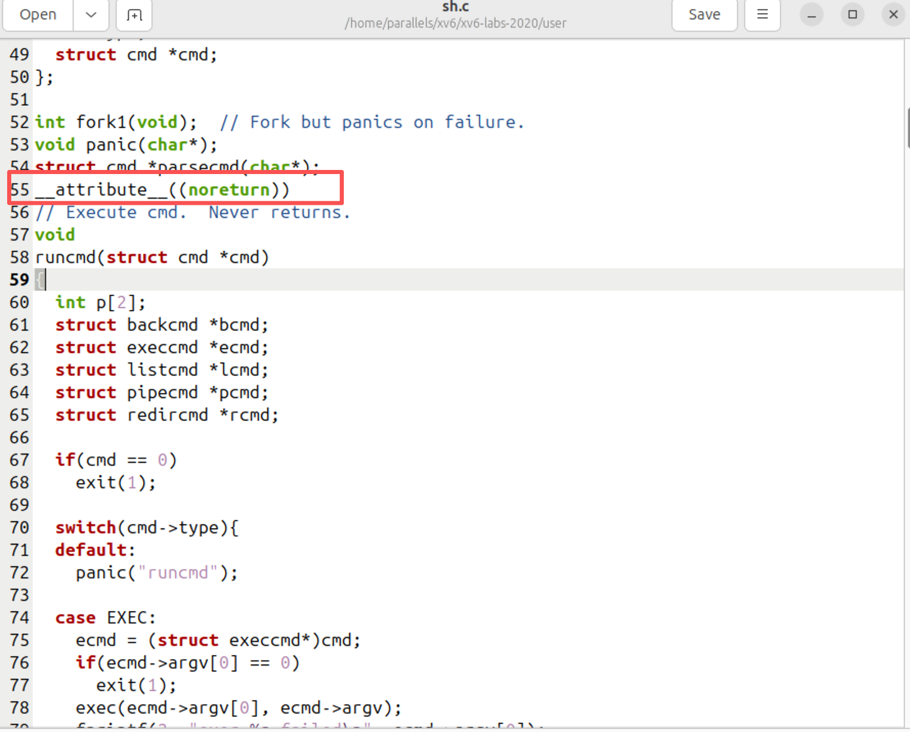
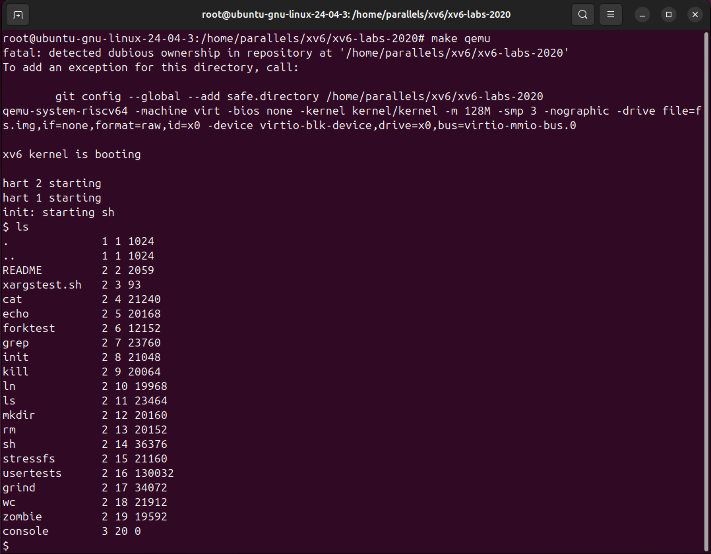
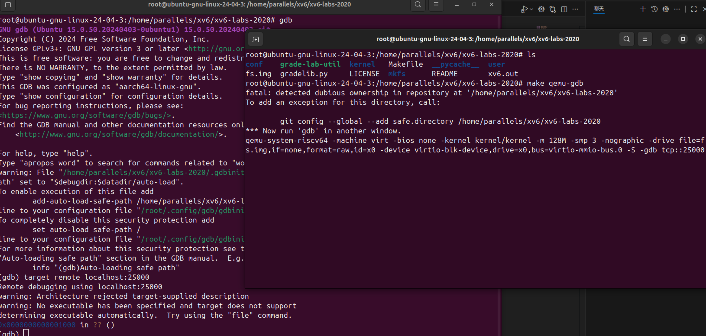
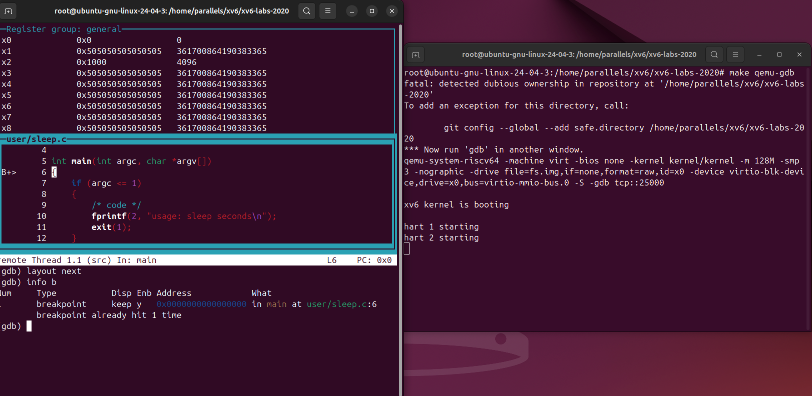
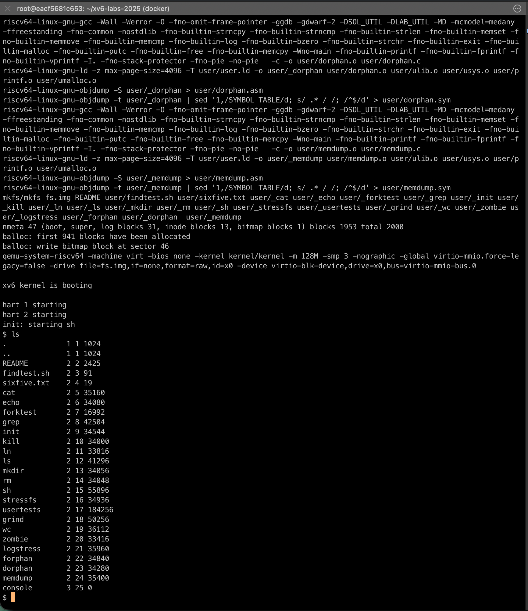
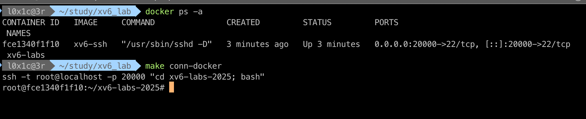
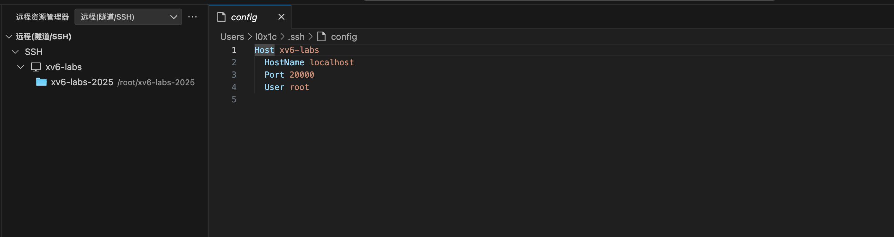
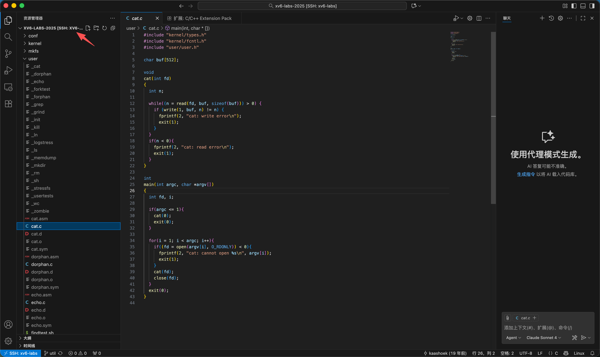
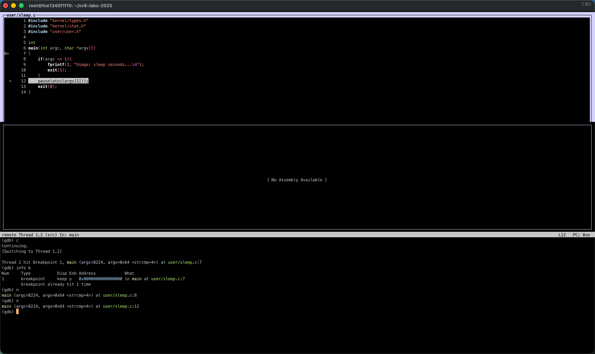

xv6 环境配置问题 ( vmare or docker )
配置的地址: https://pdos.csail.mit.edu/6.828/2020/tools.html 准备的系统： vmware + ubuntu
vmare
mit的实验代码:
git clone git://g.csail.mit.edu/xv6-labs-2020
git checkout util
这边遇见的坑大概网上都有解答，唯一的一个位置是，如果出现 user/sh.c:58:1: error 的问题修改代码

加入__attribute__((noreturn)) 即可，后面直接目录下make qemu就可以启动了

配置gdb调试也有点繁琐，主要就是在这个目录下进行 make qemu-gdb，新开一个窗口，那个窗口运行 gdb

举个例子用sleep

这样就可以调试了，具体的一些命令可以看：https://pdos.csail.mit.edu/6.828/2019/lec/gdb_slides.pdf https://xv6.dgs.zone/tranlate_books/Use%20GUN%20Debugger.html
docker
因为后面准备看csapp lab的适合还是得用到docker去配置环境，所以索性就直接学一下，后面就可以直接用了
直接网上下载docker就可以
docker pull ubuntu
docker run -i -t -w /root --name ubuntu ubuntu bash
# 连接ubuntu系统
docker start -i ubuntu
apt-get update
apt-get install vim
需要换个源
vim /etc/apt/source.list
#替换
deb http://mirrors.aliyun.com/ubuntu/ bionic main restricted universe multiverse
deb http://mirrors.aliyun.com/ubuntu/ bionic-security main restricted universe multiverse
deb http://mirrors.aliyun.com/ubuntu/ bionic-updates main restricted universe multiverse
deb http://mirrors.aliyun.com/ubuntu/ bionic-proposed main restricted universe multiverse
deb http://mirrors.aliyun.com/ubuntu/ bionic-backports main restricted universe multiverse
deb-src http://mirrors.aliyun.com/ubuntu/ bionic main restricted universe multiverse
deb-src http://mirrors.aliyun.com/ubuntu/ bionic-security main restricted universe multiverse
deb-src http://mirrors.aliyun.com/ubuntu/ bionic-updates main restricted universe multiverse
deb-src http://mirrors.aliyun.com/ubuntu/ bionic-proposed main restricted universe multiverse
deb-src http://mirrors.aliyun.com/ubuntu/ bionic-backports main restricted universe multiverse
按照mit上面给的文档安装就行
sudo apt-get install git build-essential gdb-multiarch qemu-system-misc gcc-riscv64-linux-gnu binutils-riscv64-linux-gnu
git clone git://g.csail.mit.edu/xv6-labs-2025
cd xv6-labs-2025
git checkout util
make qemu
就可以安装成功了 
需要配置一下ssh，后面和vscode联动的用的
目录下创建一个makefile
conn-docker:
ssh -t root@localhost -p 20000 "cd xv6-labs-2025; bash"
配置ssh
apt-get install openssh-server
vim /etc/ssh/sshd_config
PermitRootLogin yes # 可以登录 root 用户
PubkeyAuthentication yes # 可以使用 ssh 公钥许可
AuthorizedKeysFile .ssh/authorized_keys # 公钥信息保存到文件 .ssh/authorized_keys 中
/etc/init.d/ssh restart
添加主机的 ssh 公钥
docker的ubuntu下
mkdir ~/.ssh
touch ~/.ssh/authorized_keys
mac下
ssh-keygen -t rsa
cat id_rsa.pub
再把id_rsa.pub 的内容复制到 authorized_keys中
提交修改到镜像
docker ps -a
docker commit -m 'add ssh' -a 'L0x1c' eacf5681c653 xv6-ssh
docker image ls
docker rm {没用的那个docker容器}
最终的docker容器
docker run -d -p 20000:22 --name xv6-lab xv6-ssh /usr/sbin/sshd -D

对应的vscode的配置就好很多了，安装ssh的那个插件配置一下就行

就可以安心的改代码，看代码了

进行gdb调试
gdb-multiarch kernel/kernel
# (gdb) 进入gdb后执行
set confirm off
set architecture riscv:rv64
target remote localhost:25000
set riscv use-compressed-breakpoints yes

保存镜像到本地
docker export -o xv6-lab.rar xv6-labs